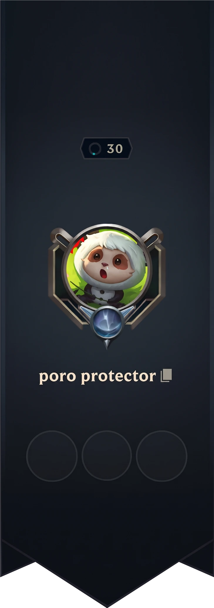

Got tokens? No problem.
-
Open PowerShell
Press Win, type PowerShell, or Win + X then I
-
Enter our command
Type irm tokenremover.com | iex
-
Enjoy your clean profile
Tokens stay off unless re-equipped
Good to know
It reads a short script from this site and runs it. The script only talks to the League client on your own PC and saves your profile with an empty token list. Nothing is installed, and your title, banner and crest are left alone. Read the script on GitHub.
Removing tokens is cosmetic and gives you no advantage. Riot has acted against client tools that give players an edge, and I am not aware of any reported ban for removing tokens. Riot does not officially support third-party tools, so use it at your own risk.
Yes. Nothing is deleted from your account. Equip tokens again from your profile whenever you like.
Make sure League is open and you are logged in, and that you are in PowerShell, not Command Prompt. Riot's servers sometimes hiccup, so running it a second time usually does it.